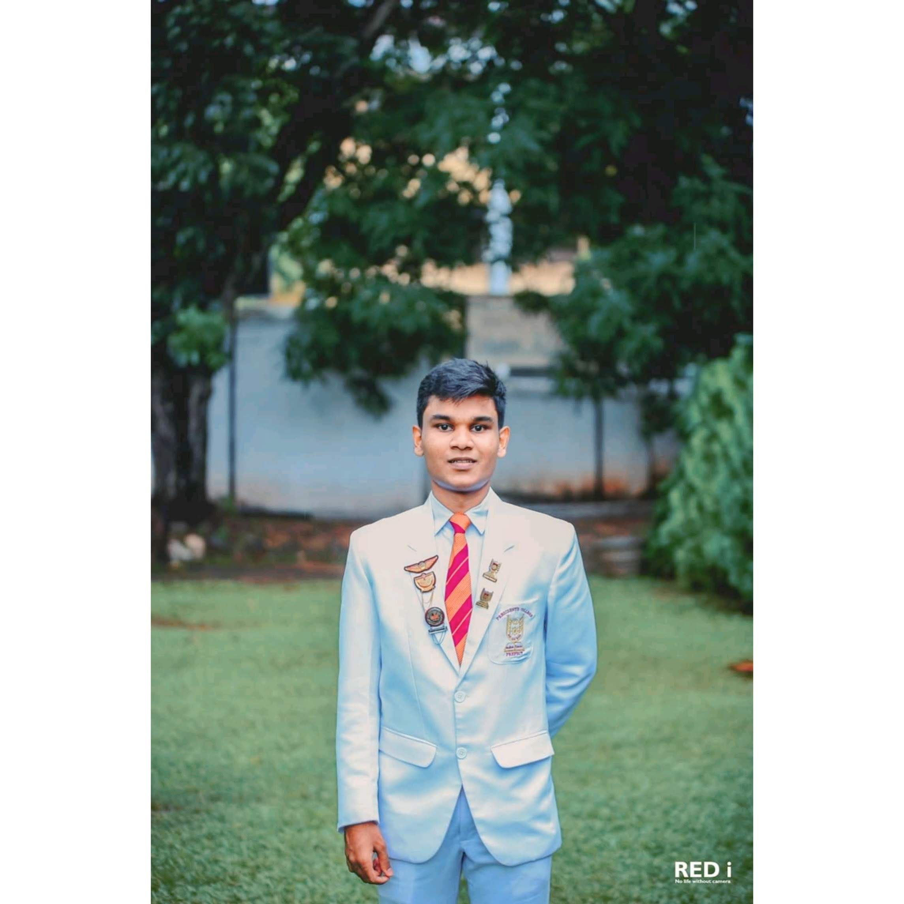

Tharushka Madusara
Home
|
About Me
|
School Life
|
Curriculum vitae
Name: - Tharushka Madusara Hegodaarachchi
Address: - 396/7, Galthotuwa Road,Kotikawatta
Age: - 19
Date of Birth: - 2001.01.11
Email: - tharushka.madusara1234@gmail.com
Telephone: - 071 696 0023
Education Qualifications
G.C.E. ORDINARY LEVEL EXAMINATION (2016)
English Language A
Mathematics A
Science A
Information & Communication Technology A
Business & Accounting Studies A
History A
Buddhism A
APPR. Of English LIT. Text B
Sinhala Language B
G.C.E. ADVANCE LEVEL EXAMINATION (2019)
Combine Mathematics A
Physics A
Information & Communication Technology A
English A
Common General Test 68
Z-Score 2.5448
Other Qualifications
Cambridge English Entry Level Certificate in ESOL International (Entry 3) (KEY)
English language Enhancement Program Conducted at American Center Colombo
Following CCNP ENCOR
Other Interests and Abilities
Senior Prefect - President’s College Kotte (2018/2019)
Junior Prefect – President’s College Kotte (2017/2018)
President of Aeronautical Society President’ College Kotte (2018/2019)
Chief Organizer of Science Society President’s College Kotte (2018/2019)
Co-Ordinator of president’s College Media Unit (2018/2019)
Information & communication Technology prize – 2018
Information & communication Technology prize – 2019
English Language prize winner – 2018
English Language prize winner – 2019
Scouting (2012-2014)
Karate (2012-2014)
